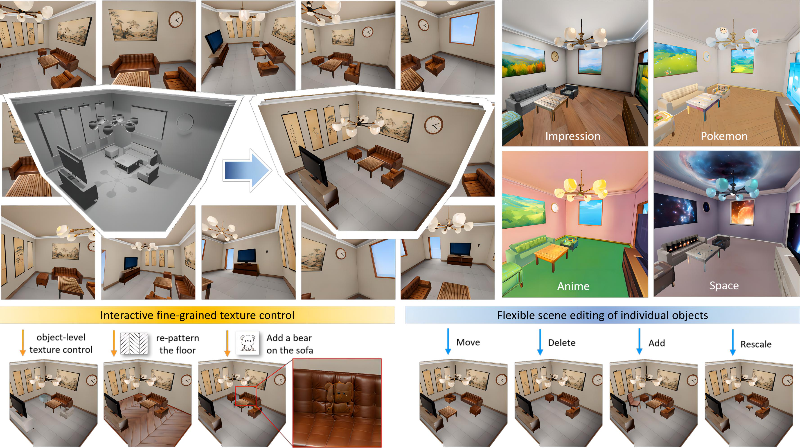

|
Ruijie Lu (陆睿杰) I'm currently a second-year Ph.D student at Peking University (PKU), supervised by Prof. Gang Zeng. Before that, I received by Bachelor's degree at Peking University in July 2023. My research interests lie in 3D Computer Vision, especially scene understanding, generation and reconstruction. |
{kind=link}
Research |

|
Ruijie Lu*, Yixin Chen*, Junfeng Ni, Baoxiong Jia, Yu Liu, Diwen Wan, Gang Zeng, Siyuan Huang CVPR 2025 [Paper] [Code] [Data] [Project Page] |
|

|
Qi Wang*, Ruijie Lu*, Xudong Xu, Jingbo Wang, Michael Yu Wang, Bo Dai, Gang Zeng, Dan Xu ECCV 2024 [Paper] [Code] [Project Page] |
|
|
Diwen Wan, Ruijie Lu, Gang Zeng, ICML 2024 [Paper] [Code] [Project Page] |

|
Jiaxiang Tang, Ruijie Lu, Hang Zhou, Xiang Wen, Xiaokang Chen, Diwen Wan, Gang Zeng, Jingdong Wang, Ziwei Liu, arXiv [Paper] [Code] [Project Page] |
Experience |
 |
Peking University, China
2023.09 - now Ph.D. Student Advisor: Prof. Gang Zeng |
 |
Beijing Institute for General Artificial Intelligence (BIGAI), China
2023.12 - now Research Intern Advisor: Dr. Yixin Chen and Dr. Siyuan Huang |
 |
Shanghai Artificial Intelligence Laboratory, China
2023.06 - 2023.11 Research Intern Advisor: Dr. Xudong Xu and Dr. Jingbo Wang |
|
Peking University, China
2019.09 - 2023.07 Undergraduate Student |
|
Fell free to contact me if you have any problem.
|